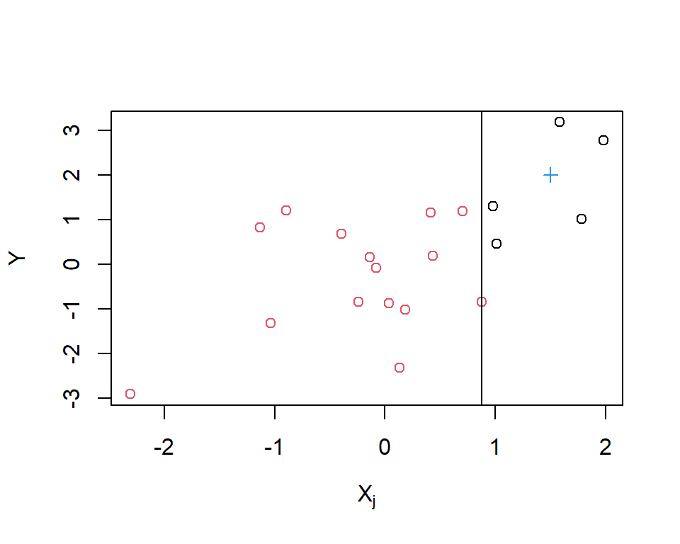
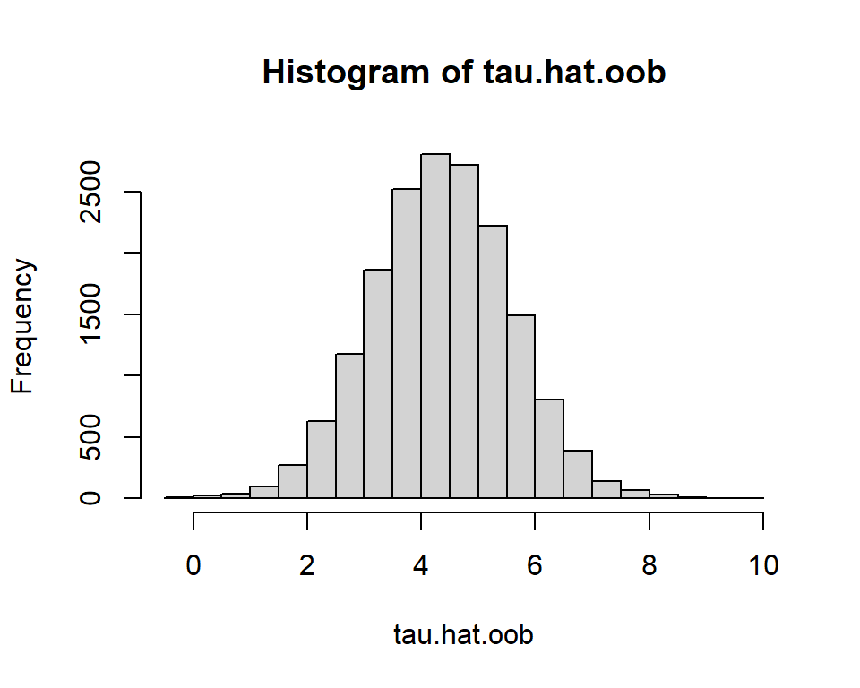
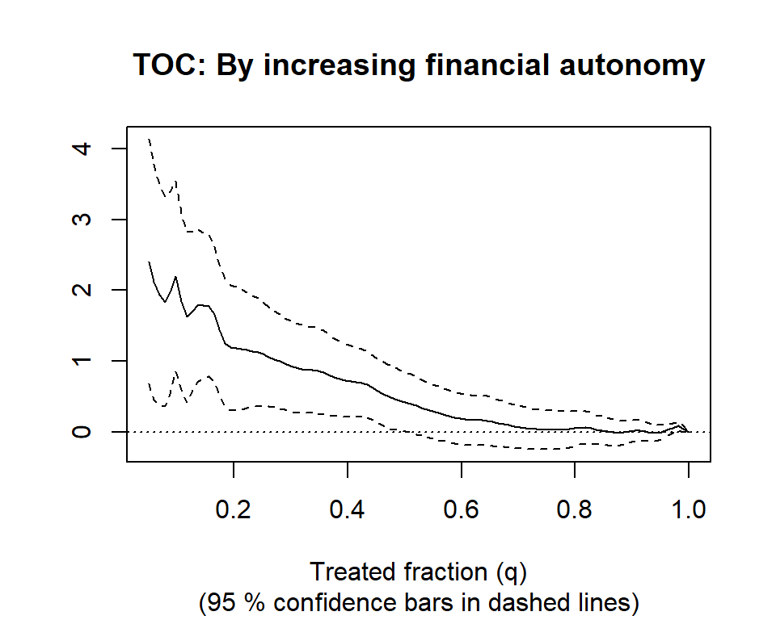
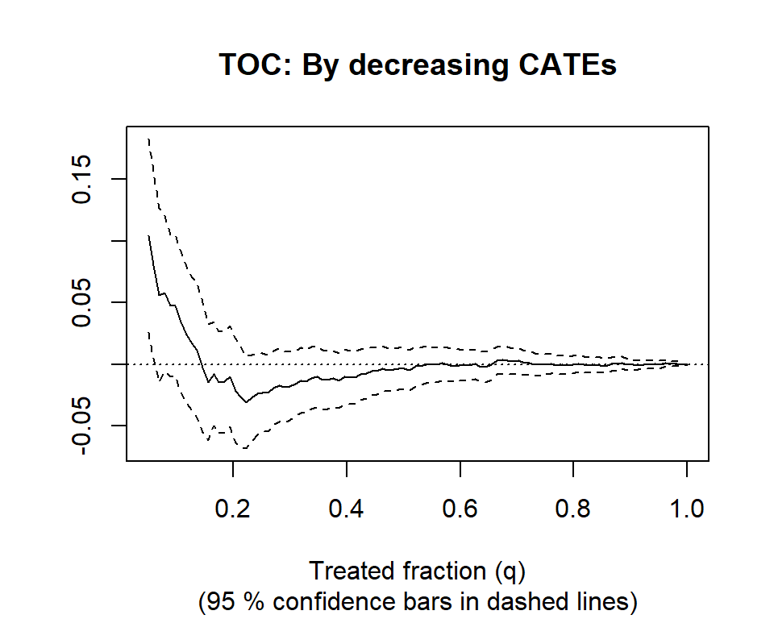

grf 简介
An introduction to grf · grf 官方教程中译
来源：R 包 grf 官方教程
grf_guide.Rmd（原文渲染版），作者 Erik Sverdrup、Vitor Hadad、Susan Athey、Julie Tibshirani、Stefan Wager，采用 GPL-3 许可。 本页为中文翻译，非原文；按 GPL-3 保留原作者署名与许可证，并标明这是修改（翻译）后的版本。 译自 grf 2.6.1（源码修订5bee99b）。 页内代码与图表由本站以 R 4.4.3 + grf 2.6.1 重新执行生成，因随机种子与包版本差异，数值可能与原站略有出入。
本文介绍如何用 R 的 grf 包做基于森林的因果推断。 广义随机森林（generalized random forests；Athey, Tibshirani, & Wager, 2019）扩展了 Breiman（2001）的随机森林，使我们能用数据驱动的方式估计因果参数中的异质性，例如无混杂性下的条件平均处理效应。 我们梳理核心功能，包括平均处理效应的双稳健估计、最佳线性投影、用 TOC 曲线评估异质性的工具、用 Qini 曲线评价处理规则，以及学习可解释的树型策略的方法。本文包含两个应用实例，展示实践中的处理效应异质性。 更多细节见包文档，以及 Athey & Wager（2019）和 Sverdrup, Petukhova, & Wager（2024）的应用教程。
本文各节：
grf 导览
本节说明：现代机器学习如何在估计平均处理效应时灵活地控制混杂；Breiman（2001）的随机森林如何改造成针对处理效应异质性的工具；以及这一思路如何推广到更广的一类场景，包括工具变量和右删失结果。 更多信息见 Athey & Wager（2019）、Cui et al.（2023）、Dandl et al.（2024）、Friedberg et al.（2020）和 Sverdrup et al.（2024）。 想看更细致的理论推导，Wager（2024）给出了教科书式的讨论。
面向因果推断的机器学习
机器学习方法是为预测设计的。但在因果应用中，我们的目标往往是推断而不是预测。统计 估计 和统计 预测 是两类不同的任务（Efron, 2020），不过只要用法得当，预测工具也能支撑有效的推断。 本节说明现代机器学习如何结合半参数统计的思想，为因果推断提供灵活、不依赖具体模型的工具。
设我们观测到结果 \(Y_i\)、二值处理指示变量 \(W_i \in {0,1}\) 和协变量 \(X_i\)。目标是估计平均处理效应 \(\tau = \text{E}[Y_i(1) - Y_i(0)]\)。在观察性研究中，我们可能会跑一个回归 \[ Y_i \sim \tau W_i + \beta X_i, \] 并把 \(\hat\tau\) 解释为 ATE 的估计。这一解释依赖于：
- 给定 \(X\) 时 \(W\) 满足无混杂性（如 Rosenbaum and Rubin, 1983）。
- 混杂变量 \(X\) 对 \(Y\) 的作用是线性的。
- 处理效应 \(\tau\) 是常数。
假设 1) 是 识别 假设，我们根据领域知识决定是否接受它。假设 2) 和 3) 是 建模 选择，我们可能希望放松。
放松假设 2)。不假设线性，而是考虑部分线性模型 \[ Y_i = \tau W_i + f(X_i) + \varepsilon_i, \quad \text{E}[\varepsilon_i \mid X_i, W_i] = 0, \] 其中 \(f\) 是未知函数。难点在于 \(f(X_i)\) 没有被指定。
Robinson（1988）指出，借助下面这两个中间量，即 倾向评分（propensity score） \[ e(x) = \text{E}[W_i \mid X_i=x], \] 和 条件均值， \[ m(x) = \text{E}[Y_i \mid X_i = x] = f(x) + \tau e(x), \] 我们可以把模型改写成中心化形式： \[ Y_i - m(x) = \tau \Big(W_i - e(x)\Big) + \varepsilon_i. \] 这说明 \(\tau\) 可以通过把残差化的结果对残差化的处理做回归来估计。重要的是，Robinson（1988）证明了：即使 \(m(x)\) 和 \(e(x)\) 的估计收敛得更慢，这个估计量仍然是 root-\(n\) 相合的。这种稳健性通常称为正交性：冗余参数（nuisance）估计中的小误差不会给目标参数带来明显偏差。
怎么灵活地估计 \(m(x)\) 和 \(e(x)\)？这是标准的回归问题：用 \(X_i\) 预测 \(Y_i\)，用 \(X_i\) 预测 \(W_i\)。现代机器学习方法，例如 boosting 或随机森林，很适合这类任务（James et al., 2013）。 一个麻烦是，把机器学习的估计直接代入这个估计量，会因为正则化而产生偏差。 半参数估计中的一个标准做法是样本分裂：用不同的数据子集分别训练和评估这些成分。 交叉拟合是常见的实现方式，它轮换哪些折用于训练、哪些折用于估计（Chernozhukov et al., 2018; Zheng & van der Laan, 2011）。 在 grf 中，袋外（out-of-bag）预测提供了一种森林原生的留一式交叉拟合。
放松假设 3)。不假设处理效应是常数，而是设处理效应随协变量变化： \[ Y_i = \textcolor{red}{\tau(X_i)}W_i + f(X_i) + \varepsilon_i, \, \, \text{E}[\varepsilon_i \mid X_i, W_i] = 0, \] 其中 \(\textcolor{red}{\tau(x)}\) 就是条件平均处理效应 \(\text{E}[Y_i(1) - Y_i(0) \mid X_i = x]\)。 如果我们能拿到一个邻域 \(\mathcal{N}(x)\)，在其中 \(\tau\) 近似为常数，就可以完全照前面的做法，对属于 \(\mathcal{N}(x)\) 的样本做残差对残差回归，即： \[ \tau(x) := \text{lm}\Biggl( Y_i - \hat m^{(-i)}(X_i) \sim W_i - \hat e^{(-i)}(X_i), \text{weights} = 1\{X_i \in \mathcal{N}(x) \}\Biggr), \] 其中 \(^{{(-i)}}\) 表示袋外估计。 从概念上说，因果森林估计 \(\tau(x)\) 的方式，是用那些被预测为具有相近处理效应的样本，做一个局部加权的残差对残差回归。
关键问题是怎么构造这些权重。下一节回顾 Breiman 的随机森林，说明它如何充当一个自适应的邻域搜索器。
随机森林作为自适应邻域搜索器
Breiman 的随机森林分两个阶段估计条件均值 \(\mu(x) = \text{E}[Y_i \mid X_i = x]\)：
建树阶段：生长 \(B\) 棵树，贪心地选择协变量分裂点，使亚组均值的平方差 \(n_L n_R (\bar y_L - \bar y_R)^2\) 最大。
预测阶段：对目标样本 \(x\)，把各棵树中落在同一个终端叶节点 \(L_b(x)\) 的结果 \(Y_i\) 求平均：\(\hat \mu(x) = \frac{1}{B} \sum\limits_{b=1}^{B} \sum\limits_{i=1}^{n} Y_i \dfrac{1\{Xi \in L_b(x)\}} {|L_b(x)|}\)。

对于单棵树的一次分裂，图 1 显示了选中的分裂点：使叶节点均值之差最大的那条竖线。目标点 \(x\) 落入某一个叶节点，预测就是该叶节点内结果的平均。在所有树上重复并求平均，就得到最终估计。
把预测改写为 \[\begin{equation*} \begin{split} \hat \mu(x) & = \sum_{i=1}^{n} \frac{1}{B} \sum_{b=1}^{B} Y_i \frac{1\{X_i \in L_b(x)\}} {|L_b(x)|} \\ & = \sum_{i=1}^{n} Y_i \textcolor{magenta}{\alpha_i(x)}, \end{split} \end{equation*}\] 可以看出，随机森林的预测是结果的加权平均。权重 \(\textcolor{magenta}{\alpha_i(x)}\) 反映训练样本 \(i\) 与 \(x\) 落在同一叶节点的频繁程度，可以理解为自适应的相似度权重。 随机森林的这种加权视角在统计应用中经常出现，例如可参见 Zeileis, Hothorn & Hornik（2003）。
因果森林 把这种森林加权与 Robinson 的方法结合起来：
建树阶段：选择使估计出的亚组处理效应平方差 \(n_L n_R (\hat \tau_L - \hat \tau_R)^2\) 最大的分裂，其中 \(\hat\tau\) 由残差对残差回归算得。
预测阶段：用得到的森林权重 \(\textcolor{magenta}{\alpha(x)}\) 来估计 \[ \tau(x) := \text{lm}\Biggl( Y_i - \hat m^{(-i)}(X_i) \sim W_i - \hat e^{(-i)}(X_i),~ \text{weights} = \textcolor{magenta}{\alpha_i(x)} \Biggr). \]
因此，因果森林做的是 Robinson 回归的森林局部化版本。在 causal_forest 中，参数 Y.hat 和 W.hat 给出 \(m(x)\) 和 \(e(x)\) 的估计，默认由各自独立的回归森林得到。如果处在随机化场景、倾向评分已知，直接用 W.hat 参数提供即可。 Robinson 变换还引出了一个针对异质处理效应的通用损失函数（Nie & Wager, 2021），causal_forest 用它来指导调参。
同样的思路不止适用于处理效应和残差对残差回归。在广义随机森林框架下，森林可以定制成针对任何由估计方程 \(\psi_\theta(\cdot)\) 定义的参数的异质性。给定一个在不带协变量时能识别参数 \(\theta\) 的估计方程，grf 就以 Breiman 的随机森林为蓝本构造权重 \(\alpha(x)\)，得到依赖协变量的估计 \(\theta(x)\)。对因果森林来说，这个估计方程对应 Robinson 回归。
正交估计方程把不同的统计任务分离开，带来实际的好处。其他森林，例如 instrumental_forest 和 causal_survival_forest，采用类似的构造。比如 causal_survival_forest 拟合两个独立的生存森林，用来构造 右删失校正。这些校正再用于构造一个正交估计方程，grf 随后训练最终的随机森林，针对处理效应参数的异质性。
出于计算和实现上的考虑，grf 不在 建树阶段 的每个候选分裂处重新估计目标参数，而是使用在父节点上计算一次的、基于影响函数的近似。grf 因此可以复用标准的随机森林机制（Breiman 式的树生长和基于回归的分裂），只是把原始结果换成由正交得分导出的伪结果。从实现角度看，这意味着构建新的森林估计量只需指定合适的得分和伪结果，底层的随机森林算法保持不变。
注：目标参数 \(\theta\) 可以是向量。这时分裂基于平方 \(\ell_2\) 距离 \(n_L n_R \lVert \hat\theta_L - \hat\theta_R \rVert^2\)，就像
grf的multi_arm_causal_forest和lm_forest那样。
高效估计 CATE 的汇总量
Robinson 的残差对残差方法具有正交性，因此很适合收敛较慢的估计。但如果我们想要的是 \(\tau(x)\) 的汇总量，比如 ATE 或最佳线性投影（BLP），并且要求它们有根号 \(n\) 的收敛速度和精确的置信区间，又该怎么办？
直接对估计值 \(\hat\tau(X_i)\) 取平均并不是最优做法：预测误差太大，而且不会相互抵消。Robins、Rotnitzky 与 Zhao（1994）提出了增广逆概率加权（Augmented Inverse Probability Weighted, AIPW）估计量，它把倾向评分和条件均值估计结合起来，对其中任一部分的估计误差都稳健。它可以写成一步去偏校正的形式：
\[ \hat \Gamma_i = \hat \tau^{(-i)}(X_i) + \frac{W_i - \hat e^{(-i)}(X_i)}{\hat e^{(-i)}(X_i)[1 - \hat e^{(-i)}(X_i)]} \Big(Y_i - \hat \mu^{(-i)}(X_i, W_i)\Big), \] 其中 \(\mu(x, w) = E[Y_i \mid X_i = x, W_i = w]\)（这可以从因果森林的拟合结果中反推出来）。基于森林的 ATE 则由下式给出 \[ \hat \tau_{\text{AIPW}} = \frac{1}{n} \sum_{i=1}^{n} \hat \Gamma_i. \]
这种构造给出双稳健的估计方程，也是 grf 中各类汇总方法的基础，包括 average_treatment_effect 和 best_linear_projection。对应的双稳健得分 \(\hat \Gamma_i\) 可以通过函数 get_scores 取得。 举个具体例子：ATE 就是 \(\hat \Gamma_i\) 的平均，而最佳线性投影就是把 \(\hat \Gamma_i\) 对一组协变量 \(X_i\) 做回归。
用 TOC 曲线评估异质性
结合诚实性和子抽样等技术（Wager 与 Athey，2018），广义随机森林算法可以给出逐点的渐近保证。这类结果让人放心，因为它们刻画了森林的大样本行为。不过在实际工作中，要判断某个数据集里是否存在有意义的异质性，还有更直接、更透明的办法。
一个简单又务实的做法是训练/测试评估。我们在训练集上拟合 CATE 模型，然后在留出的测试集上按预测的处理效应划分亚组，检查各组之间的平均处理效应是否存在系统性差异。 这个做法相当通用：我们可以评估任何由机器学习得到的定向函数，也包括其他效应度量，比如预测风险，或者在具体应用中与处理获益相关的其他量。只要取值越大对应的预期处理收益越高，同样的评估逻辑就成立（若想了解不依赖单次训练/测试划分的做法，可参见 Wager（2024））。
rank_average_treatment_effect 函数把这套流程自动化：它按估计出的定向函数的所有分位数对测试样本分层。定向算子特征（Targeting Operator Characteristic, TOC）曲线（Yadlowsky 等，2024）把预测 CATE 排在最高 \(q\) 分位内的个体的平均处理效应与整体 ATE 作比较。 \[
\text{TOC}(q) = \text{E}[Y_i(1) - Y_i(0) \mid \text{估计的 CATE}(X_i) \geq (1 - q)\text{ 分位数}] - \text{ATE}.
\] 给定一个训练好的评估森林，grf 会给出 TOC 以及 TOC 曲线下面积的双稳健估计，还会给出标准误，从而可以对异质性是否存在做一个简单而有效的 \(t\) 检验。 在处理效应恒定的原假设下，TOC 曲线下面积的期望为零。
用户也可以提供两组估计的 CATE，或者更一般地，提供两组定向得分，用来比较不同的优先级策略。此时 rank_average_treatment_effect 函数会返回两条 TOC 曲线下面积之差的估计值和置信区间，可用于检验这两组定向得分在为个体安排处理优先级的能力上是否有显著差别。
用 Qini 曲线做策略评估
我们常常想用数据驱动的规则来指导处理分配决策，这类规则也叫_策略_（policy）。在二值处理下，策略就是把协变量映射到处理决策的规则 \(\pi(X_i) \in \{0, 1\}\)。策略的价值是按它执行所得到的期望收益， \[ G(\pi) = \text{E}[\pi(X_i)\{Y_i(1) - Y_i(0)\}]. \] 给定双稳健得分 \(\hat \Gamma_i\)，我们只要在满足 \(\pi(X_i) = 1\) 的样本上对 \(\hat \Gamma_i\) 取平均，就能估计任何固定策略的价值。 估计出的 CATE 函数 \(\hat\tau(\cdot)\) 自然会导出定向规则。一个简单的例子是阈值策略 \[ \pi_0(X_i) = \begin{cases} 1,& \hat \tau(X_i) \geq 0\\ 0, & \text{其他情况}. \end{cases} \] 如果真实的 CATE 已知，最优策略就是对 \(\tau(X_i) \geq 0\) 的个体施加处理。由于我们只能拿到估计值 \(\hat\tau(\cdot)\)，所以改为通过估计策略价值 \(G(\pi_0)\) 来评价这类数据驱动策略的表现。
处理往往成本高昂或数量有限，我们可能只能对人群中的一部分施加处理。 例如，我们可以在第 80 百分位处设阈值，只针对按预测效应排序位于前 20% 的个体。 改变这个阈值会得到一族策略，用处理比例预算 \(B \in (0,1]\) 来索引。_Qini 曲线_通过绘制下式来概括这族策略的表现 \[
G(\pi_B) = \text{E}[\pi_B(X_i)\{Y_i(1) - Y_i(0)\}],
\] 其中 \[
\pi_B(X_i) =
\begin{cases}
1, & \hat\tau(X_i) > 0 \text{ 且 } \hat\tau(X_i) \ge \text{预测为正的 CATE 的}(1-B)\text{ 分位数} \\
0, & \text{其他情况}.
\end{cases}
\] 借助双稳健得分和合适的重抽样方法，我们可以得到整条曲线上 \(G(\pi_B)\) 的置信区间。 这个方法在姊妹包 maq（Sverdrup 等，2025）中实现，它还支持成本各异的多处理组：通过求解一个中间的线性规划，把预测效应和成本映射为受预算约束的策略。
学习可解释的策略
在有些应用里，直接依据复杂的黑箱 CATE 预测来分配处理并不可取。决策者往往需要透明、可解释的决策规则，只根据少数几个可观测特征来分配处理。这类策略既容易沟通和落地（例如在数据库查询里写几条条件语句），又仍然利用了处理效应的异质性。
给定实验数据或观察数据，我们可以通过最大化策略价值来学习这类可解释策略 \[
V(\pi) = \text{E}[Y_i(\pi(X_i))],
\] 其中我们把策略 \(\pi\) 限制在一类事先指定的规则中，例如浅层决策树。 由于两个潜在结果不可能同时被观测到，我们需要合适的收益代理量。事实表明（Athey 与 Wager，2021），只要用 \(\text{E}[Y_i(1)]\) 和 \(\text{E}[Y_i(0)]\) 的双稳健得分作为收益代理量，就能高效求解这个问题的经验版本。grf 包会自动构造这些得分，姊妹包 policytree（Sverdrup 等，2020）则负责求解深度为 \(k\) 的浅层决策树的优化问题。由此得到的处理规则很简单，可以在留出数据上评估，并与“对所有人施加处理”或“对任何人都不施加处理”这类自然基准作比较。
示例：处理效应异质性与财经素养
作为一个简单的实证示例，我们用 causal_forest 函数分析一项测量财经教育效果的随机对照试验。 Bruhn 等（2016）把巴西的高中随机分配到一个财经教育项目，并测量了财经素养等结果。在学校层面随机化可以避免学生之间的干扰。我们使用 grf 中自带的一份处理过的数据，包含 850 所高中约 17,000 名学生的个体信息。结果变量是处理后的金融素养，共有 13 个处理前协变量，包括问卷回答，以及衡量学生储蓄能力和财务自主程度的两个指数。
有 4% 到 10% 的协变量取值缺失（NA）。我们假设缺失是随机的，并保留这些观测，因为 grf 通过“把缺失纳入属性”（missingness incorporated in attributes, MIA）分裂来处理缺失数据（Mayer 等，2020；Twala 等，2008）。
data("schoolrct")
Y <- schoolrct$outcome
W <- schoolrct$treatment
school <- schoolrct$school
X <- schoolrct[-(1:3)]这里我们觉得用下面这些处理前协变量来定义 CATE 会比较有意思
colnames(X)
#> [1] "is.female"
#> [2] "mother.attended.secondary.school"
#> [3] "father.attened.secondary.school"
#> [4] "failed.at.least.one.school.year"
#> [5] "family.receives.cash.transfer"
#> [6] "has.computer.with.internet.at.home"
#> [7] "is.unemployed"
#> [8] "has.some.form.of.income"
#> [9] "saves.money.for.future.purchases"
#> [10] "intention.to.save.index"
#> [11] "makes.list.of.expenses.every.month"
#> [12] "negotiates.prices.or.payment.methods"
#> [13] "financial.autonomy.index"接下来，我们用默认设置拟合一个因果森林。由于这是一项 RCT，我们通过 W.hat = 0.5 传入试验的随机化概率。我们还传入 clusters = school，让方差估计考虑学校层面的聚类。
备注：在大数据集上，设置
options(grf.verbose = TRUE)可以在训练和预测过程中显示进度。
备注：这里我们用
num.threads = 2来限制 CPU 占用。默认值（NULL）会使用所有可用的核心。
c.forest <- causal_forest(X, Y, W, W.hat = 0.5, clusters = school, num.threads = 2)计算 ATE：
ate <- average_treatment_effect(c.forest)
ate
#> estimate std.err
#> 4.35 0.52
ate[1] / sd(Y) # effect in SD units
#> estimate
#> 0.3该项目的效应为正且显著，使财经素养提高了大约四分之一个标准差。
接下来，我们通过在若干选定协变量上估计最佳线性投影来概括 \(\tau(X_i)\)： \[ \tau(X_i) \sim a + \beta_1\text{is.female}_i + \beta_2\text{family.receives.cash.transfer}_i + \beta_3\text{is.unemployed}_i + \beta_4 \text{financial.autonomy.index}_i. \] 我们用下面的代码得到该模型中系数的双稳健估计
best_linear_projection(c.forest, X[c("is.female",
"family.receives.cash.transfer",
"is.unemployed",
"financial.autonomy.index")])
#>
#> Best linear projection of the conditional average treatment effect.
#> Confidence intervals are cluster- and heteroskedasticity-robust (HC3):
#>
#> Estimate Std. Error t value Pr(>|t|)
#> (Intercept) 6.7392 0.9777 6.89 5.7e-12 ***
#> is.female -0.7268 0.5307 -1.37 0.1709
#> family.receives.cash.transfer -1.1992 0.6526 -1.84 0.0661 .
#> is.unemployed 0.3206 0.6277 0.51 0.6095
#> financial.autonomy.index -0.0329 0.0128 -2.58 0.0099 **
#> ---
#> Signif. codes: 0 '***' 0.001 '**' 0.01 '*' 0.05 '.' 0.1 ' ' 1可以看到，财务自主程度较高的学生平均从培训项目中获益更少。
接下来，我们用全部 13 个协变量估计袋外的 CATE 预测值：
tau.hat.oob <- predict(c.forest)$predictions
hist(tau.hat.oob)
直方图显示大多数学生的效应都接近整体 ATE，但也存在一定变动。为了判断这些差异是否反映了有意义的异质性，我们估计 TOC 曲线下面积：
rate.oob <- rank_average_treatment_effect(c.forest, tau.hat.oob)
t.stat.oob <- rate.oob$estimate / rate.oob$std.err
pnorm(t.stat.oob, lower.tail = FALSE) # one-sided p-value Pr(>t)
#> [1] 0.65这里我们既用袋外预测来构造 \(\hat\tau(\cdot)\)，又用它来评估 TOC。由于同一批数据被重复使用，得到的 \(t\) 统计量没有精确的有限样本保证。我们没有做显式的训练/测试划分，而是采取一个务实的经验做法，报告所关心方向上的单侧检验（AUTOC \(> 0\)）。 在这个例子里，单侧检验没有拒绝“不存在异质性”的原假设。
不过，TOC 在评估其他优先级策略时仍然有用。 例如，财务自主程度低的学生可能获益更多。因果森林的变量重要性证实 financial.autonomy.index 是一个关键预测变量：
var.imp <- variable_importance(c.forest)
head(colnames(X)[order(var.imp, decreasing = TRUE)])
#> [1] "financial.autonomy.index" "intention.to.save.index"
#> [3] "family.receives.cash.transfer" "father.attened.secondary.school"
#> [5] "is.female" "has.computer.with.internet.at.home"我们可以构造一条优先考虑财务自主程度较低的学生的 TOC：
rate.autonomy <- rank_average_treatment_effect(
c.forest,
-1 * X$financial.autonomy.index, # Negate priorities to rank by lowest first.
q = seq(0.05, 1, length.out = 100),
subset = !is.na(X$financial.autonomy.index))
plot(rate.autonomy, main = "TOC: By increasing financial autonomy")
结果显示，财务自主程度处于最低 20% 的学生，其 ATE 比整体平均高出约 1.1 分，置信区间不包含零。
这类培训项目要落地并推广到大量学生，通常需要投入资源。这里的分析表明，把财务自主程度低的学生作为目标可能是个不错的策略。如果估计这条 TOC 下的面积，我们会得到大于 1.96 的 \(t\) 值。在常规显著性水平下可以拒绝原假设，据此可以认为这个优先级策略是有效的。
rate.autonomy
#> estimate std.err target
#> 0.69 0.22 priorities | AUTOC
rate.autonomy$estimate / rate.autonomy$std.err
#> [1] 3.2接下来，我们考虑用 policytree 包学习一个简单策略，把协变量 X 映射到处理决策。 我们只在协变量没有缺失值的观测上做这件事。首先，用 policytree 包中的 double_robust_scores 函数取得 \(\text{E}[Y_i(0)]\) 和 \(\text{E}[Y_i(1)]\) 这两个量的双稳健得分。
library(policytree)
Gamma.hat <- double_robust_scores(c.forest)
no.missing <- complete.cases(X)
X.nm <- X[no.missing, ]
Gamma.nm <- Gamma.hat[no.missing, ]两种处理状态下平均财经素养得分的双稳健估计为
colMeans(Gamma.nm)
#> control treated
#> 58 62在这个应用中，很难想象会有学生_不_从处理中获益，而_对所有人施加处理_这一策略很可能提高整个人群的财经素养。但对所有人施加处理成本很高；因此自然要问：在扣除成本之后，是否还存在能给整个人群带来收益的策略。这里我们设想每分配一次处理就要付出相当于 ATE 的代价，并在目标函数中把它扣除：
Gamma.nm[, "treated"] <- Gamma.nm[, "treated"] - ate["estimate"]然后，我们让 policy_tree 完成下面的最大化 \[
\underset{\pi \in \text{深度为 1 的决策树}}{\text{argmax}} \frac{1}{n}\sum_{i=1}^{n} \hat \Gamma[\pi(X_i)],
\] 其中 \(\pi(X_i) \in \{1, 2\}\) 对应 Gamma 矩阵中的对照列和处理列。
ptree <- policy_tree(X.nm, Gamma.nm, depth = 1)
print(ptree)
#> policy_tree object
#> Tree depth: 1
#> Actions: 1: control 2: treated
#> Variable splits:
#> (1) split_variable: financial.autonomy.index split_value: 41
#> (2) * action: 2
#> (3) * action: 1这里我们得到了一条简单的决策规则：“如果财务自主得分 \(\leq\) 41，就分配财经教育培训项目”，这再次印证了前面的分析——处理前变量 financial.autonomy.index 可以作为处理决策的良好候选依据（注：在实际工作中，我们应当预留一个测试集来估计这个策略的价值）。
示例：贫困对注意力的影响
本节分析 Carvalho 等人（2016）最初研究的实验数据。作者开展了一项随机实验：低收入个体在发薪日之前或之后完成一项认知测试。结果变量是这项测试的答对题数，该测试用于衡量认知能力。 原始研究没有发现统计上显著的平均效应。但后续分析表明，贫困可能损害某些亚组的认知功能（Farbmacher 等人，2021）。 grf 中提供了这份数据的处理后版本。它包含约 2,500 名个体和 24 个处理前特征（年龄、收入、教育程度等）。教育程度按有序方式编码（4：大学毕业；3：上过大学；2：高中毕业；1：高中以下），因此可以直接用于随机森林的分裂。
我们这样编码处理状态：若个体是在发薪日之后被观测的，则 \(W_i=1\)。在这种编码下，正的处理效应对应认知表现的改善（即损害减轻）。这样选择便于解释：例如，当优先级排序成功锁定获益最大的个体时，TOC 曲线就是正的。 用潜在结果的记号，令 \(Y_i(1)\) 表示“无贫困”状态下（发薪日之后）的答对题数，\(Y_i(0)\) 表示财务拮据状态下（发薪日之前）的答对题数。平均处理效应为 \[ \text{E}[Y_i(1) - Y_i(0)], \] 它衡量个体不受财务约束时认知表现的平均改善程度。CATE 则刻画这一改善的异质性。
data("attentionrct")
Y <- attentionrct$outcome.correct.ans.per.second
W <- 1 - attentionrct$treatment
X <- attentionrct[-(1:4)]相对于预测变量的个数，样本量只算中等；在全部协变量上拟合 CATE 估计量并做训练/测试评估，检验效能可能不足。 为了降维，我们先估计条件均值 \(\text{E}[Y_i \mid X_i]\)，再用森林的变量重要性挑出一部分协变量用于 CATE。在下面的例子中，按重要性保留前 10 个变量是一种简单的启发式做法。
train <- sample(nrow(X), nrow(X) * 0.6)
test <- -train
Y.forest <- regression_forest(X[train, ], Y[train], num.trees = 500, num.threads = 2)
varimp.Y <- variable_importance(Y.forest)
keep <- colnames(X)[order(varimp.Y, decreasing = TRUE)[1:10]]
X.cate <- X[, keep]
print(keep)
#> [1] "age" "working"
#> [3] "education" "current.income"
#> [5] "pay.day.amount.fraction.of.income" "black"
#> [7] "household.income" "white"
#> [9] "disabled" "retired"接下来，我们在训练样本上拟合 CATE 森林，并在留出的测试样本上评估异质性。由于数据来自随机实验，我们通过 W.hat 参数提供已知的随机化概率。
# Estimate CATE function.
Y.hat.train <- predict(Y.forest)$predictions
cate.forest <- causal_forest(
X.cate[train, ],
Y[train],
W[train],
Y.hat = Y.hat.train,
W.hat = 0.5,
num.threads = 2
)
tau.hat.eval <- predict(cate.forest, X.cate[test, ])$predictions
# Fit evaluation forest.
eval.forest <- causal_forest(
X[test, ],
Y[test],
W[test],
W.hat = 0.5,
num.threads = 2
)接下来，我们通过估计 TOC 以及 TOC 下的面积，评估估计出的 CATE 是否刻画了认知损害的异质性。
rate.cate <- rank_average_treatment_effect(
eval.forest,
tau.hat.eval,
q = seq(0.05, 1, length.out = 100)
)
print(rate.cate)
#> estimate std.err target
#> 0.0061 0.0092 priorities | AUTOC
rate.cate$estimate / rate.cate$std.err # t-statistic
#> [1] 0.67
plot(rate.cate, main = "TOC: By decreasing CATEs")
在常规显著性水平下，AUTOC 与零没有统计上的区别。不过，从 TOC 曲线上看，一小部分个体可能确实存在效应。如果愿意事先指定一个分位数，就可以通过查看 TOC 曲线上该点的置信区间来做正式的评估。
参考文献
Athey, Susan, Julie Tibshirani, and Stefan Wager. “Generalized random forests.” The Annals of Statistics 47, no. 2 (2019): 1148-1178.
Athey, Susan, and Stefan Wager. “Estimating treatment effects with causal forests: An application.” Observational studies 5, no. 2 (2019): 37-51.
Athey, Susan, and Stefan Wager. “Policy learning with observational data.” Econometrica 89, no. 1 (2021): 133-161.
Breiman, Leo. “Random forests.” Machine learning 45, no. 1 (2001): 5-32.
Bruhn, Miriam, Luciana de Souza Leão, Arianna Legovini, Rogelio Marchetti, and Bilal Zia. “The impact of high school financial education: Evidence from a large-scale evaluation in Brazil.” American Economic Journal: Applied Economics 8, no. 4 (2016).
Carvalho, Leandro S., Stephan Meier, and Stephanie W. Wang. “Poverty and economic decision-making: Evidence from changes in financial resources at payday.” American Economic Review 106, no. 2 (2016): 260-84.
Chernozhukov, Victor, Denis Chetverikov, Mert Demirer, Esther Duflo, Christian Hansen, Whitney Newey, and James Robins. “Double/debiased machine learning for treatment and structural parameters.” The Econometrics Journal, 2018.
Cui, Yifan, Michael R. Kosorok, Erik Sverdrup, Stefan Wager, and Ruoqing Zhu. “Estimating heterogeneous treatment effects with right-censored data via causal survival forests.” Journal of the Royal Statistical Society Series B: Statistical Methodology 85, no. 2 (2023): 179-211.
Dandl, Susanne, Christian Haslinger, Torsten Hothorn, Heidi Seibold, Erik Sverdrup, Stefan Wager, and Achim Zeileis. “What makes forest-based heterogeneous treatment effect estimators work?.” The Annals of Applied Statistics 18, no. 1 (2024): 506-528.
Efron, Bradley. “Prediction, estimation, and attribution.” International Statistical Review 88 (2020): S28-S59.
Farbmacher, Helmut, Heinrich Kögel, and Martin Spindler. “Heterogeneous effects of poverty on attention.” Labour Economics 71 (2021): 102028.
Friedberg, Rina, Julie Tibshirani, Susan Athey, and Stefan Wager. “Local linear forests.” Journal of Computational and Graphical Statistics 30, no. 2 (2020): 503-517.
James, Gareth, Daniela Witten, Trevor Hastie, and Robert Tibshirani. An introduction to statistical learning: with applications in R. Vol. 103. New York: springer, 2013.
Mayer, Imke, Erik Sverdrup, Tobias Gauss, Jean-Denis Moyer, Stefan Wager, and Julie Josse. “Doubly robust treatment effect estimation with missing attributes.” The Annals of Applied Statistics 14, no. 3 (2020): 1409-1431.
Robins, James M., Andrea Rotnitzky, and Lue Ping Zhao. “Estimation of regression coefficients when some regressors are not always observed.” Journal of the American Statistical Association 89, no. 427 (1994): 846-866.
Nie, Xinkun, and Stefan Wager. “Quasi-oracle estimation of heterogeneous treatment effects.” Biometrika 108, no. 2 (2021): 299-319.
Robinson, Peter M. “Root-N-consistent semiparametric regression.” Econometrica: Journal of the Econometric Society (1988): 931-954.
Rosenbaum, Paul R., and Donald B. Rubin. “The central role of the propensity score in observational studies for causal effects.” Biometrika 70, no. 1 (1983): 41-55.
Sverdrup, Erik, Maria Petukhova, and Stefan Wager. “Estimating treatment effect heterogeneity in psychiatry: A review and tutorial with causal forests.” International Journal of Methods in Psychiatric Research 34, no. 2 (2025): e70015.
Sverdrup, Erik, Han Wu, Susan Athey, and Stefan Wager. “Qini curves for multi-armed treatment rules.” Journal of Computational and Graphical Statistics 34, no. 3 (2025): 948-960.
Sverdrup, Erik, Ayush Kanodia, Zhengyuan Zhou, Susan Athey, and Stefan Wager. “policytree: Policy learning via doubly robust empirical welfare maximization over trees.” Journal of Open Source Software 5, no. 50 (2020): 2232.
Twala, Bheki ETH, M. C. Jones, and David J. Hand. “Good methods for coping with missing data in decision trees.” Pattern Recognition Letters 29, no. 7 (2008): 950-956.
Zheng, Wenjing, and Mark J. van der Laan. “Cross-validated targeted minimum-loss-based estimation.” In Targeted Learning, pp. 459-474. Springer, New York, NY, 2011.
Wager, Stefan. Causal Inference: A Statistical Learning Approach. Cambridge University Press (in preparation), 2024.
Wager, Stefan. Sequential validation of treatment heterogeneity. arXiv preprint arXiv:2405.05534 (2024).
Wager, Stefan, and Susan Athey. “Estimation and inference of heterogeneous treatment effects using random forests.” Journal of the American Statistical Association 113.523 (2018): 1228-1242.
Yadlowsky, Steve, Scott Fleming, Nigam Shah, Emma Brunskill, and Stefan Wager. “Evaluating Treatment Prioritization Rules via Rank-Weighted Average Treatment Effects.” Journal of the American Statistical Association, 120(549), 2025.
Zeileis, Achim, Torsten Hothorn, and Kurt Hornik. “Model-based recursive partitioning.” Journal of Computational and Graphical Statistics 17, no. 2 (2008): 492-514.